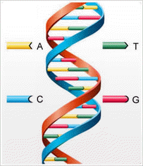

Μέσα στον πυρήνα κάθε κυττάρου κάθε ζωντανού οργανισμού, βρίσκεται το μόριο του DNA, μέσα στο οποίο υπάρχουν αποθηκευμένες όλες οι πληροφορίες που αφορούν τη δομή και τις λειτουργίες του κυττάρου και κατ' επέκταση που αφορούν όλα τα χαρακτηριστικά της δομής ενός οργανισμού καθώς και της λειτουργίας όλων των οργάνων και των συστημάτων του.
Το DNA υπάγεται στην κατηγορία των νουκλεϊκών οξέων και είναι ένα μόριο εξαιρετικά πολύπλοκο και μεγάλο σε μέγεθος (μακρομόριο). Για παράδειγμα, στον πυρήνα καθενός από τα περίπου 100 τρισεκατομμύρια κύτταρα ενός ανθρώπου, υπάρχουν περίπου 2 μέτρα DNA! Όμως χάρη στην καταπληκτική ικανότητα αναδίπλωσής του, καταφέρνει να περιοριστεί μέσα σε έναν χώρο περίπου 10 εκατομμυριοστών του μέτρου!

Η δομή του μορίου του DNA θυμίζει μεταλλική γυριστή σκάλα (με δεξιόστροφο προσανατολισμό). Αυτή η μορφή παρουσιάστηκε το 1953 από τους Watson και Crick και ονομάστηκε «μοντέλο της διπλής έλικας». Τα πλαϊνά αυτής της σκάλας (οι «κουπαστές») αποτελούνται από χημικές ενώσεις που ονομάζονται πολυσακχαρίτες, ενώ κάθε «σκαλοπάτι» αποτελείται από δύο αζωτούχες βάσεις. Πρόκειται για χημικές ενώσεις που στο DNA απαντώνται σε 4 διαφορετικές μορφές: Αδενίνη (Α), Θυμίνη (Τ), Γουανίνη (G) και Κυτοσίνη (C), και αποτελούν τα 4 χημικά γράμματα με τα οποία είναι καταγεγραμμένη όλη η πληροφορία που βρίσκεται αποθηκευμένη μέσα στο DNA. Οι δύο αζωτούχες βάσεις που αποτελούν κάθε σκαλοπάτι, συνδέονται μεταξύ τους, βάσει του κανόνα της συμπληρωματικότητας: μια Αδενίνη συνδέεται μόνο με μία Θυμίνη, ενώ μια Γουανίνη μόνο με μία Κυτοσίνη. Επομένως, κάθε σκαλοπάτι αποτελείται είτε από ένα ζεύγος Α-Τ, είτε από ένα ζεύγος G-C.Καθεμία από τις δύο «κουπαστές», μαζί με τα «μισά» σκαλοπάτια που τής αντιστοιχούν (κάθε μισό σκαλοπάτι είναι και ένα χημικό γράμμα), αποτελεί μια πολυνουκλεοτιδική αλυσίδα. Άρα, το μόριο του DNA αποτελείται από δύο πολυνουκλεοτιδικές αλυσίδες. Αν διατρέξουμε τη μία πολυνουκλεοτιδική αλυσίδα, διαβάζοντας τα χημικά της γράμματα και χωρίζοντάς τα σε τριάδες, τότε κάθε αλληλουχία τριών χημικών γραμμάτων αποτελεί και μια χημική λέξη, όπως ακριβώς μια συγκεκριμένη αλληλουχία γραμμάτων του αλφαβήτου πάνω σε ένα χαρτί, αντιστοιχεί σε μια συγκεκριμένη λέξη της γλώσσας μας. Κάθε χημική λέξη δίνει την πληροφορία για την κατασκευή ενός συγκεκριμένου αμινοξέος.
Επομένως, συγκεκριμένη αλληλουχία χημικών γραμμάτων σχηματίζει συγκεκριμένη αλληλουχία τριάδων, δηλαδή χημικών λέξεων, οι οποίες με τη σειρά τους δίνουν την πληροφορία για την κατασκευή μιας συγκεκριμένης αλληλουχίας αμινοξέων με αποτέλεσμα να σχηματίζεται μία συγκεκριμένη πρωτεΐνη. Αυτή η συγκεκριμένη αλληλουχία γραμμάτων που έχει ως αποτέλεσμα τη δημιουργία μιας συγκεκριμένης πρωτεϊνης, λέγεται γονίδιο. Το DNA λοιπόν περιέχει γονίδια καθένα από το οποία διαθέτει, όπως είδαμε, χημικές λέξεις για την παραγωγή μιας πρωτεϊνης αλλά και χημικά σημεία στίξεως των οποίων ο ρόλος είναι να διαχωρίζουν τα γονίδια μεταξύ τους, όπως ακριβώς συμβαίνει και με τις λέξεις ενός κειμένου οι οποίες χωρίζονται σε προτάσεις με τη βοήθεια των σημείων στίξεως.
Εκτός όμως από τα γονίδια, το μόριο του DNA περιέχει και μεγάλα τμήματα στα οποία δεν υπάρχουν πληροφορίες για την παραγωγή πρωτεϊνών.
ΕΝΗΜΕΡΩΣΗ:Το Σεπτέμβριο του 2012 το ερευνητικό πρόγραμμα “ENCODE” παρουσίασε μια «ανανεωμένη έκδοση» της «εγκυκλοπαίδειας του DNA» μέσα από την οποία παρουσιάστηκε και η ανακάλυψη ότι το μέχρι σήμερα θεωρούμενο ως «άχρηστο» τμήμα του DNA, αποτελεί ένα τεράστιο κρυφό «λειτουργικό σύστημα» που ελέγχει το ανθρώπινο γονιδίωμα. Συνολικά, περίπου το 80% του DNA αποκαλύφθηκε πλέον ότι επιτελεί κάποιου είδους χρήσιμη βιοχημική λειτουργία (για περισσότερες λεπτομέρειες δείτε την πηγή Νο 10 στη δεξιά στήλη).
Η διαδικασία με την οποία ανακτάται από το μόριο του DNA η πληροφορία για την παραγωγή μιας πρωτεϊνης, λέγεται μεταγραφή, ενώ η διαδικασία ανάγνωσης αυτής της πληροφορίας και εν συνεχεία κατασκευής της πρωτεϊνης, λέγεται μετάφραση. Και οι δύο αυτές διαδικασίες εκτελούνται από μια σειρά κυτταρικών μηχανισμών εξαιρετικής πολυπλοκότητας, οι οποίοι συγκροτούν κυριολεκτικά μία γραμμή παραγωγής αξιοθαύμαστης ταχύτητας και ακρίβειας. Άλλωστε, πολλοί γενετιστές παρομοιάζουν το κύτταρο με μια αυτοκινητοβιομηχανία εξοπλισμένη με ένα μεγάλο πλήθος περίπλοκων μηχανών που όμως δουλεύουν συντονισμένα, κατασκευάζοντας κομμάτια που ταιριάζουν μεταξύ τους και συγκροτούν τα δομικά και λειτουργικά στοιχεία του κυττάρου και κατ’ επέκταση, του οργανισμού. Στις διαδικασίες αυτές καθοριστικό ρόλο παίζει ένα ακόμη είδος νουκλεϊκού οξέος, το RNA.
Το μόριο του DNA, διαθέτει ακόμη την ικανότητα να φτιάχνει πιστά αντίγραφα του εαυτού του με καταπληκτική ταχύτητα και ακρίβεια, ούτως ώστε η γενετική πληροφορία να μεταβιβάζεται αναλλοίωτη στα νέα κύτταρα και κατ' επέκταση στους απογόνους ενός οργανισμού. Η ακρίβεια με την οποία οι κυτταρικοί μηχανισμοί πραγματοποιούν την αντιγραφή του DNA, καθώς και η ύπαρξη μηχανισμών ελέγχου και επιδιόρθωσης, αποτρέπουν την αλλοίωσή του, μειώνοντας την πιθανότητα λάθους κατά την αντιγραφή σε 1 στα 10 δισεκατομμύρια! Αυτό σημαίνει ότι μέσω όλων αυτών των διαδικασιών ευνοείται και διασφαλίζεται η σταθερότητα του γενετικού υλικού και όχι η μεταβλητότητά του η οποία μακροπρόθεσμα θα είχε ως αποτέλεσμα την αλλοίωση των χαρακτηριστικών του είδους προς τον σχηματισμό ενός νέου, όπως υποστηρίζεται από τη θεωρία της εξέλιξης. Συμπερασμάτικά, οι μηχανισμοί μεταβίβασης της γενετικής πληροφορίας από γενιά σε γενιά, είναι κατασκευασμένοι ούτως ώστε να αποτρέπουν οποιαδήποτε αλλοίωση, με άλλα λόγια να αντιστέκονται στην «εξέλιξη» του είδους!
Από το 1961 άρχισε να αποκρυπτογραφείται ο γενετικός κώδικας, δηλαδή ποιό αμινοξύ αντιστοιχεί σε καθεμία από τις χημικές λέξεις μέσα στο DNA. Θα μπορούσαμε να παρομοιάσουμε το γεγονός με την αποκρυπτογράφηση μιας άγνωστης γραφής σκαλισμένης πάνω σε μια αρχαία πέτρινη πλάκα. Με βάση αυτή την αντιστοιχία, ας εστιάσουμε πάνω σε ορισμένα σημαντικά χαρακτηριστικά του μορίου του DNA:
Το μόριο του DNA περιέχει πληροφορία
Παρά το γεγονός ότι αρχικά δεν γνωρίζουμε την ερμηνεία των σκαλισμάτων της επιγραφής, εν τούτοις μπορούμε να διακρίνουμε ότι πάνω σ' αυτή την πέτρα υπάρχει γραμμένη κάποια πληροφορία. Αυτό αμέσως αποκλείει το ενδεχόμενο τα σχήματα αυτά να σκαλίστηκαν πάνω στην πέτρα από τυχαίες φυσικές διεργασίες. Διότι η φύση ποτέ δεν μπορεί να παράγει πληροφορία. Οι τυχαίες φυσικές διεργασίες μπορούν να παράγουν ακανόνιστα σχήματα ή στην καλύτερη περίπτωση, επαναλαμβανόμενα μοτίβα (π.χ. οι ομοιόμορφες ρυτιδώσεις πάνω στην άμμο από τα κύματα, τα κρυσταλλικά πλέγματα των αλάτων από τις ηλεκτροστατικές δυνάμεις κ.ά.). Όμως η παραγωγή πληροφορίας απαιτεί την επέμβαση ενός όντος με νοημοσύνη. Το ενδεχόμενο η καταχώρηση πληροφορίας στο DNA να έγινε μέσω τυχαίων φυσικών διεργασιών, απαιτεί από τα κύματα και τον άνεμο να σχηματίσουν πάνω στην άμμο, όχι κάποιες ρυτιδώσεις, αλλά ολόκληρη την εγκυκλοπαίδεια Britannica!
Το μόριο του DNA έχει προσδιορισμένη πολυπλοκότητα
Ο λόγος εξ αιτιάς του οποίου αντιλαμβανόμαστε ότι τα σκαλίσματα στην πέτρα αποτελούν ένα είδος γραφής, και επομένως περιέχουν πληροφορία, είναι διότι έχουν προσδιορισμένη πολυπλοκότητα. Αυτό σημαίνει καταρχήν ότι δεν πρόκειται για ένα συνεχώς επαναλαμβανόμενο μοτίβο, διότι κάτι τέτοιο θα ήταν μεν κάτι το προσδιορισμένο αλλά όχι πολύπλοκο. Από την άλλη μεριά, τα σκαλίσματα της πέτρας είναι μεν πολύπλοκα, αλλά η πολυπλοκότητά τους δεν είναι εντελώς τυχαία (χαοτική) αλλά προσδιορισμένη. Μάλιστα, οι μελέτες των ειδικών θα βρουν ότι υπάρχει μία λογική στον τρόπο με τον οποίο έχουν σκαλιστεί τα σχήματα (κανόνες γραμματικής και συντακτικού) και βάσει αυτής της λογικής άλλωστε θα γίνει και η αποκρυπτογράφηση της άγνωστης γραφής.
Ομοίως, το μόριο του DNA είναι εξαιρετικά πολύπλοκο αλλά με μια πολυπλοκότητα η οποία δεν είναι χαοτική αλλά προσδιορισμένη, διότι υπακούει σε κανόνες τέτοιας λογικής ώστε τα περιεχόμενά του να θεωρούνται από τους επιστήμονες ως ισοδύναμα με «κώδικα» και «γραφή». Οι τυχαίες φυσικές διεργασίες μπορούν να παράγουν είτε κάτι το προσδιορισμένο αλλά όχι πολύπλοκο, είτε κάτι το πολύπλοκο αλλά όχι προσδιορισμένο. Για να κατασκευαστεί κάτι που διαθέτει προσδιορισμένη πολυπλοκότητα, απαιτείται η επέμβαση ενός νοήμονα δημιουργού. Ιδιαίτερα δε όταν πρόκειται, σύμφωνα με ειδικούς γενετιστές, για το πιο αποδοτικό μέσο αποθήκευσης πληροφορίας στο σύμπαν! (ένα κουταλάκι DNA θα μπορούσε να χωρέσει τις πληροφορίες όλων των γονιδίων όλων των οργανισμών και να περισσέψει χώρος για τις πληροφορίες όλων των βιβλίων που έχουν γραφτεί ποτέ!)
Τα παραπάνω, καταρρίπτουν την υπόθεση της εξέλιξης των ειδών και από μια επιπλέον οπτική γωνία. Στο γενετικό υλικό ενός μονοκύτταρου οργανισμού (π.χ. βακτήριο) περιέχονται περίπου 600 γονίδια, και όσο προχωράμε προς τα ανώτερα είδη ζωντανών οργανισμών, το πλήθος των γονιδίων προοδευτικά αυξάνεται (στον άνθρωπο 30-40 χιλιάδες γονίδια). Αν όντως έλαβε χώρα εξέλιξη, δημιουργώντας από τους πιο απλούς, τους πιο σύνθετους οργανισμούς, πώς είναι δυνατόν στην αρχική μικρή ποσότητα DNA, να προστέθηκε ένα τεράστιο πλήθος οργανωμένης γενετικής πληροφορίας εντελώς τυχαία αλλά και μέσα σε ένα εξαιρετικά μικρό χρονικό διάστημα; (βλ. «Κάμβρια Έκρηξη», θα αναφερθούμε σε επόμενο άρθρο). Με άλλα λόγια, πώς αναπτύχθηκε κάτι με προσδιορισμένη πολυπλοκότητα, χωρίς την επέμβαση νοημοσύνης;
Τις πιο πολλές φορές, τα παραπάνω ερωτήματα προσπαθούν να απαντηθούν με αναφορές στη λειτουργία των νόμων της Φυσικής και της Χημείας και στις χημικές ιδιότητες των επιμέρους τμημάτων που απαρτίζουν το DNA. Είναι όμως σαν να προσπαθεί κανείς να εξηγήσει για ποιο λογο βγάζει νόημα μια φράση τυπωμένη σε ένα χαρτί, αναφερόμενος στις φυσικές και χημικές ιδιότητες του μελανιού. Οι ιδιότητες όμως αυτές, το μόνο που εξηγούν είναι για ποιό λόγο το μελάνι στέκεται πάνω στο χαρτί, και όχι για ποιό λόγο το μελάνι διατάσσεται στο χαρτί με τέτοιο τρόπο ώστε να μεταφέρει πληροφορία.
Το τελειωτικό χτύπημα στη θεωρία ότι το DNA θα μπορούσε να είναι προϊόν τυχαιότητας, έρχονται να δώσουν τα νεότερα δεδομένα από την επιστήμη της Χημείας, καθώς η παραγωγή, έστω και στο εργαστήριο, των συστατικών μερών των νουκλεϊκών οξέων (DNA, RNA) είναι εξαιρετικά δύσκολη και θα ήταν ανέφικτη χωρίς ειδικούς χειρισμούς και αυστηρά ελεγχόμενες συνθήκες, γεγονός που καθιστά αδύνατο τον τυχαίο σχηματισμό των νουκλεϊκών οξέων στην πολύ πιο αφιλόξενη αρχέγονη σούπα.
Άλλωστε, για τη δημιουργία DNA, καθώς και για όλες τις λειτουργίες που επιτελεί, χρειάζονται πρωτεΐνες. Αλλά για τη δημιουργία πρωτεϊνών χρειάζονται οδηγίες από το DNA. Στο ξεκίνημα της ζωής λοιπόν, ποιό σχηματίστηκε πρώτο; Οι πρωτεΐνες ή τα νουκλεϊκά οξέα; Αυτό μας ανάγει στο γνωστό αίνιγμα: «η κότα έκανε το αυγό ή το αυγό την κότα;» Διότι το ένα δεν μπορεί να υπάρξει χωρίς το άλλο. Όλες οι γνωστές μορφές ζωής διαθέτουν ταυτόχρονα και πρωτεΐνες και νουκλεϊκά οξέα. Κανένα όμως από τα δύο, όπως έχουμε αναφέρει, δεν είναι δυνατόν να δημιουργήθηκε πρώτο από τυχαίες χημικές διεργασίες. Άλλωστε και το εναλλακτικό σενάριο ύπαρξης ενός «κόσμου RNA» ως λίκνο της ζωής, (βλ. σχετικό υλικό) αντιμετωπίζει ανυπέρβλητα προβλήματα από τα νεότερα δεδομένα που προκύπτουν.
Είναι λοιπόν χρέος της επιστημονικής κοινότητας να μην παρερμηνεύει τα δεδομένα προσπαθώντας να υπερασπιστεί προκαταλήψεις ενδεδυμένες το μανδύα της επιστημονικοφάνειας, αλλά να παρουσιάζει το αβίαστο συμπέρασμα που προκύπτει από τα δεδομένα αυτά, δηλαδή ότι το φαινόμενο της ζωής καταμαρτυρεί την ύπαρξη Δημιουργικού Νου.
***
Τα περιεχόμενα του άρθρου αποτελούν περίληψη της εκπομπής "Χριστιανισμόςκαι Επιστήμη" της 06/11/2008. Το σχετικό υλικό παρατίθεται στη δεξιά στήλη.
Ακούστε τη σχετική εκπομπή
1ο ημίωρο 2ο ημίωρο 3ο ημίωρο 4ο ημίωρο Επιστροφή στην Κατηγορία: Εξέλιξη ή Δημιουργία; Σχετικό υλικό*
- Το γενετικό υλικό
[Από το σχολικό βιβλίο
"Βιολογία Θετικής Κατεύθυνσης"
της Γ' Λυκείου - Κεφ. 1ο] - Αντιγραφή, Έκφραση &
Ρύθμιση της Γενετικής Πληροφορίας
[Από το σχολικό βιβλίο
"Βιολογία Θετικής Κατεύθυνσης"
της Γ' Λυκείου - Κεφ. 2ο] - Εξέλιξη ή Δημιουργία;
Γενετικό Υλικό & Πρωτεΐνες
[Άρθρο του Αλέκου Περάκη από την εφημερίδα "Χριστιανισμός"] - Το Ανθρώπινο Γονιδίωμα -
Μερικές Σκέψεις με Βάση
το Λόγο του Θεού
[Άρθρο του Αλέκου Περάκη από την εφημερίδα "Χριστιανισμός"] - DNA [Άρθρο από την
ελληνική wikipedia] - DNA
[Άρθρο στα αγγλικά
από την wikipedia] - Οι λειτουργίες του DNA [Επιλεγμένα βίντεο σχετικά
με τη δομή & την αντιγραφή
του DNA καθώς και για την πρωτεϊνοσύνθεση] - Η Ιστορία της Έρευνας για
την Αποκωδικοποίηση του DNA
[Από την ιστοσελίδα Atlas Wiki] - DNA: Κωδικός Άνθρωπος
[Άρθρο από το ελληνικό
περιοδικό Focus] - Δεν υπάρχει άχρηστο DNA, σύμφωνα με το πρόγραμμα ENCODE
[Από την Εφημερίδα "Καθημερινή"] - Η μαρτυρία του DNA [Απόσπασμα από την τηλεοπτική μεταφορά του βιβλίου "The Case for a Creator" του Lee Strobel.
Παραγωγή Illustra Media] - The Case for a Creator [Βιβλίο του Lee Strobel,
Zondervan pub., 2004] - Απόψεις προσωπικοτήτων
περί DNA & Πληροφορίας
[Άρθρο της ομάδας
"Χριστιανισμός & Επιστήμη"] - Γιατί η δομή του DNA
δείχνει τον Θεό
[Άρθρο στα αγγλικά από την ιστοσελίδα EveryStudent.com] - DNA και Προσδιορισμένη
Πολυπλοκότητα
[Απόσπασμα από τo ντοκυμανταίρ "Unlocking the Mystery of Life", παραγωγή Illustra Media] - No Free Lunch -
Why Specified Complexity cannot be purchased
without Intelligence
[Βιβλιο του William Dembski περί Προσδιορισμένης Πολυπλοκότητας,
Rowman & Littlefield pub., 2002] - Σύνθεση νουκλεϊκών οξέων [Συνοπτική παράθεση των προβλημάτων σχηματισμού DNA-RNA στην αρχέγονη σούπα]
- Evolution -
Ein Kritisches Lehrbuch [Γερμανικό Πανεπιστημιακό διδακτικό σύγγραμμα] - Προβιοτική Σύνθεση Κυτοσίνης [Μελέτη των προβλημάτων της προβιοτικής σύνθεσης Κυτοσίνης και της ύπαρξης "RNA κόσμου".
Proceedings of the National Academy of Science of USA - Πρωτότυπο Άρθρο] - Μπορεί η ζωή να ξεκίνησε
από ένα μόριο RNA; [Από το site apn.gr] - Ερωτήσεις για την
προέλευση της ζωής
[Άρθρο από το physics4u.gr] - Ηλεκτρονικά Συστήματα με... Ανοσοποιητικό [Από το site news.pathfinder.gr]
- - -
* Θα θέλαμε να διευκρινίσουμε ότιη ιστοσελίδα μας δεν εκπροσωπεί
ούτε σχετίζεται με το περιεχόμενο άλλων ιστοσελίδων προς τις οποίες παραθέτουμε συνδέσμους (links).